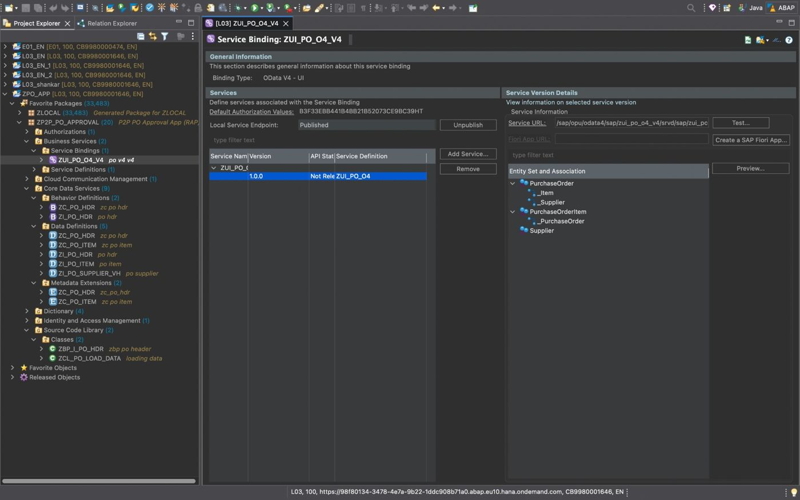
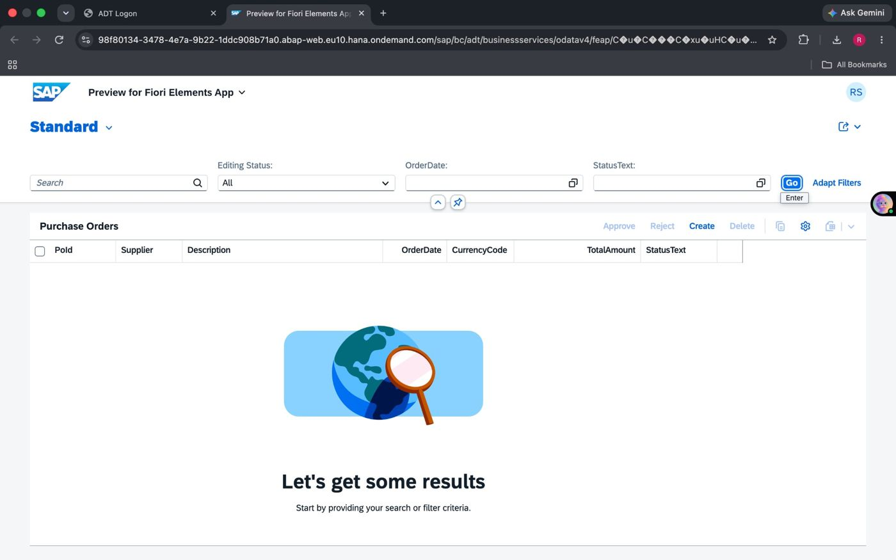
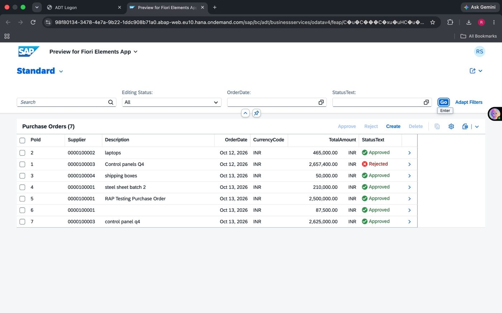

PROJECT REPORT
PROCURE-TO-PAY
PURCHASE ORDER APPROVAL APP
Built using SAP ABAP Cloud, RAP Managed Scenario,
Draft Handling, OData V4 and SAP Fiori Elements
SUBMITTED BY
RATHLAVATH SHANKAR
Roll Number: 24WJ5A6712
Branch: B.Tech – Computer Science and Engineering (Data Science)
ACADEMIC / TECHNICAL PROJECT DOCUMENTATION
November 2026
Declaration
I hereby present this project report titled “Procure-to-Pay Purchase Order Approval App (SAP RAP)”. This report documents the application design, development objects, business logic, service exposure, workflow, and test output based on the supplied SAP RAP build guide and the project screenshots.
The screenshots included in this report represent the service binding and Fiori Elements application output supplied for this project.
Acknowledgement
I would like to thank my faculty, trainers, and everyone who supported my learning of SAP ABAP, Core Data Services, the ABAP RESTful Application Programming Model, and SAP Fiori Elements. This project helped me connect data modelling, business logic, service publishing, and user-interface generation in one end-to-end application.
Abstract
The Procure-to-Pay (P2P) Purchase Order Approval App is an SAP RAP application that supports the creation and approval of purchase orders. A buyer creates a purchase order with one or more line items, saves it as a draft, and submits it for approval. A different user can approve or reject the submitted order. The application calculates the order total, assigns a purchase-order number, validates the supplier and item data, and controls available actions according to the document status and user authorization.
The solution uses a managed RAP business object with draft handling, CDS interface and projection views, behavior definitions and implementation, metadata extensions, an OData V4 UI service binding, and a Fiori Elements List Report/Object Page.
Table of Contents
1. Introduction and Objectives
2. Scope and Functional Requirements
3. Technology Stack and Prerequisites
4. System Architecture
5. Database Design
6. Development and Complete Source Code
7. Business Workflow
8. Service Publishing and Fiori Elements UI
9. Project Output and Screenshots
10. Testing and Validation
11. Known Limitations and Improvements
12. Conclusion
Appendix A – Object Inventory
Appendix B – Interview Explanation Points
1. Introduction and Objectives
Procure-to-Pay is the business process through which an organization requests, orders, receives, and pays for goods or services. This project focuses on the purchase-order creation and approval stage.
1.1 Problem Statement
A purchase order needs controlled creation and approval. The application must preserve incomplete work as a draft, validate mandatory information, calculate order value, and prevent the person who created an order from approving or rejecting the same order.
1.2 Project Objectives
Create and maintain purchase-order header data and multiple line items.
Allow users to save work as a draft and resume it later.
Calculate the total amount from item quantity multiplied by item net price.
Generate a purchase-order number and initialize status/date/currency.
Validate that the supplier exists and that at least one item is present.
Provide Submit, Approve, and Reject actions.
Restrict editing and deletion after submission through instance feature control.
Prevent the creator from approving or rejecting their own purchase order.
Expose the application through OData V4 and render it using Fiori Elements.
2. Scope and Functional Requirements
| Feature | Expected behaviour | RAP concept |
|---|---|---|
| Create / edit PO with items | Maintain a header and its child items | Managed BO and composition |
| Save as draft | Save incomplete work and resume later | Draft handling |
| Automatic total | Sum quantity × net price across items | Determination on modify |
| PO number and initial status | Assign number on save; set default values | Determinations |
| Supplier validation | Supplier must exist in supplier master | Validation on save |
| Item validation | At least one item must exist | Validation on save |
| Approval workflow | Submit, approve or reject a PO | Actions |
| Status-based controls | Disable edits/actions when status does not permit them | Instance feature control |
| Segregation of duties | Creator cannot approve/reject own PO | Instance authorization |
| Fiori UI | List, filters, value help, status criticality, object page | Metadata extensions |
3. Technology Stack and Prerequisites
| Technology / Tool | Purpose |
|---|---|
| Eclipse with ABAP Development Tools (ADT) | Create and activate ABAP repository objects |
| ABAP Cloud environment | Execute clean-core RAP development |
| ABAP CDS view entities | Define the data model and consumption model |
| Managed RAP with draft | Transactional behaviour and draft lifecycle |
| EML (Entity Manipulation Language) | Read and modify RAP business objects |
| OData V4 – UI | Expose the service for Fiori Elements |
| SAP Fiori Elements | Generate List Report and Object Page UI |
Prerequisites from the supplied guide: an ABAP Cloud system such as SAP BTP ABAP Environment, ABAP Cloud Developer Trial, or a suitable S/4HANA release with ABAP Cloud language version; an ADT package using ABAP for Cloud Development; and basic ABAP/CDS knowledge.
Activation order is important. Create dependencies first and activate dependent objects after their referenced objects exist. ADT quick fixes (Ctrl+1) can generate draft tables and the behavior implementation class.
4. System Architecture
| Layer | Objects |
|---|---|
| Database | ZPO_HDR, ZPO_ITEM, ZPO_SUPPLIER; generated draft tables ZPO_HDR_D and ZPO_ITEM_D |
| Interface CDS | ZI_PO_HDR (root), ZI_PO_ITEM (child), ZI_PO_SUPPLIER_VH |
| Behavior | Behavior definition for ZI_PO_HDR and implementation class ZBP_I_PO_HDR |
| Projection CDS | ZC_PO_HDR and ZC_PO_ITEM |
| Projection behavior | Projection behavior for ZC_PO_HDR |
| UI metadata | Metadata extensions ZC_PO_HDR and ZC_PO_ITEM |
| Service | Service definition ZUI_PO_O4 and service binding ZUI_PO_O4_V4 |
| User interface | Fiori Elements List Report and Object Page |
4.1 Architecture Flow
Fiori Elements UI → OData V4 Service Binding → Service Definition → Projection CDS Views → RAP Behavior / EML → Interface CDS Views → Database Tables
The header is the root business object. The item entity is a composition child of the header. The supplier value-help view supplies selectable supplier data.
4.2 Main RAP Concepts Used
Managed implementation: RAP framework manages standard persistence operations.
Draft handling: users can keep incomplete changes in draft storage before activation.
Determination: calculates or initializes values automatically.
Validation: checks business rules and reports errors before save.
Action: executes a business operation such as submit, approve, or reject.
Instance feature control: enables or disables operations according to the current instance status.
Instance authorization: checks whether the current user is allowed to perform an operation.
5. Database Design
5.1 Table ZPO_HDR – Purchase Order Header
Stores one record per purchase order. The UUID is the technical key; PO_ID is the business-facing number.
@EndUserText.label : 'PO Header'
@AbapCatalog.enhancement.category : #NOT_EXTENSIBLE
@AbapCatalog.tableCategory : #TRANSPARENT
@AbapCatalog.deliveryClass : #A
@AbapCatalog.dataMaintenance : #RESTRICTED
define table zpo_hdr {
key client : abap.clnt not null;
key po_uuid : sysuuid_x16 not null;
po_id : abap.numc(10);
supplier : abap.char(10);
description : abap.char(100);
order_date : abap.dats;
currency_code : abap.cuky;
@Semantics.amount.currencyCode : 'zpo_hdr.currency_code'
total_amount : abap.curr(15,2);
status : abap.char(1);
created_by : abp_creation_user;
created_at : abp_creation_tstmpl;
last_changed_by : abp_lastchange_user;
last_changed_at : abp_lastchange_tstmpl;
local_last_changed_at : abp_locinst_lastchange_tstmpl;
}
5.2 Table ZPO_ITEM – Purchase Order Items
@EndUserText.label : 'PO Item'
@AbapCatalog.enhancement.category : #NOT_EXTENSIBLE
@AbapCatalog.tableCategory : #TRANSPARENT
@AbapCatalog.deliveryClass : #A
@AbapCatalog.dataMaintenance : #RESTRICTED
define table zpo_item {
key client : abap.clnt not null;
key item_uuid : sysuuid_x16 not null;
po_uuid : sysuuid_x16;
item_no : abap.numc(5);
material_text : abap.char(60);
quantity : abap.int4;
currency_code : abap.cuky;
@Semantics.amount.currencyCode : 'zpo_item.currency_code'
net_price : abap.curr(15,2);
}
5.3 Table ZPO_SUPPLIER – Supplier Master
@EndUserText.label : 'PO Supplier'
@AbapCatalog.enhancement.category : #NOT_EXTENSIBLE
@AbapCatalog.tableCategory : #TRANSPARENT
@AbapCatalog.deliveryClass : #A
@AbapCatalog.dataMaintenance : #RESTRICTED
define table zpo_supplier {
key client : abap.clnt not null;
key supplier_id : abap.char(10) not null;
supplier_name : abap.char(60);
country : abap.char(2);
}
| Table | Key fields | Purpose |
|---|---|---|
| ZPO_HDR | CLIENT + PO_UUID | Purchase-order header and status/total |
| ZPO_ITEM | CLIENT + ITEM_UUID | Line items linked by PO_UUID |
| ZPO_SUPPLIER | CLIENT + SUPPLIER_ID | Supplier value-help master data |
5.4 Sample Supplier Loading Class
Create class ZCL_PO_LOAD_DATA and run it as an ABAP Application (F9) to insert the sample supplier records.
CLASS zcl_po_load_data DEFINITION PUBLIC FINAL CREATE PUBLIC.
PUBLIC SECTION.
INTERFACES if_oo_adt_classrun.
ENDCLASS.
CLASS zcl_po_load_data IMPLEMENTATION.
METHOD if_oo_adt_classrun~main.
DELETE FROM zpo_supplier.
INSERT zpo_supplier FROM TABLE @( VALUE #(
( supplier_id = '0000100001' supplier_name = 'Tata Steel Ltd'
country = 'IN' )
( supplier_id = '0000100002' supplier_name = 'Infosys Supplies'
country = 'IN' )
( supplier_id = '0000100003' supplier_name = 'Siemens Components'
country = 'DE' )
( supplier_id = '0000100004' supplier_name = 'Acme Packaging Inc'
country = 'US' ) ) ).
out->write( |{ sy-dbcnt } suppliers loaded| ).
ENDMETHOD.
ENDCLASS.
6. Development and Complete Source Code
The following source listings are transcribed and organized from the supplied P2P RAP build guide. Use the exact object names consistently. If your system already contains objects with these names, use a project-specific suffix and update references consistently.
6.1 Supplier Value Help – ZI_PO_SUPPLIER_VH
@AccessControl.authorizationCheck: #NOT_REQUIRED
@EndUserText.label: 'Supplier Value Help'
@Search.searchable: true
define view entity ZI_PO_SUPPLIER_VH
as select from zpo_supplier
{
@ObjectModel.text.element: ['SupplierName']
@Search.defaultSearchElement: true
key supplier_id as SupplierId,
@Search.defaultSearchElement: true
supplier_name as SupplierName,
country as Country
}
6.2 Root Interface View – ZI_PO_HDR
@AccessControl.authorizationCheck: #NOT_REQUIRED
@EndUserText.label: 'Purchase Order'
define root view entity ZI_PO_HDR
as select from zpo_hdr
composition [0..*] of ZI_PO_ITEM as _Item
association [0..1] to ZI_PO_SUPPLIER_VH as _Supplier
on $projection.Supplier = _Supplier.SupplierId
{
key po_uuid as PoUuid,
po_id as PoId,
supplier as Supplier,
_Supplier.SupplierName as SupplierName,
description as Description,
order_date as OrderDate,
currency_code as CurrencyCode,
@Semantics.amount.currencyCode: 'CurrencyCode'
total_amount as TotalAmount,
status as Status,
cast( case status
when 'N' then 'New'
when 'S' then 'Submitted'
when 'A' then 'Approved'
when 'R' then 'Rejected'
else '' end as abap.char(10) ) as StatusText,
cast( case status
when 'S' then 2
when 'A' then 3
when 'R' then 1
else 0 end as abap.int1 ) as StatusCriticality,
@Semantics.user.createdBy: true
created_by as CreatedBy,
@Semantics.systemDateTime.createdAt: true
created_at as CreatedAt,
@Semantics.user.lastChangedBy: true
last_changed_by as LastChangedBy,
@Semantics.systemDateTime.lastChangedAt: true
last_changed_at as LastChangedAt,
@Semantics.systemDateTime.localInstanceLastChangedAt: true
local_last_changed_at as LocalLastChangedAt,
_Item,
_Supplier
}
6.3 Child Interface View – ZI_PO_ITEM
@AccessControl.authorizationCheck: #NOT_REQUIRED
@EndUserText.label: 'Purchase Order Item'
define view entity ZI_PO_ITEM
as select from zpo_item
association to parent ZI_PO_HDR as _PurchaseOrder
on $projection.PoUuid = _PurchaseOrder.PoUuid
{
key item_uuid as ItemUuid,
po_uuid as PoUuid,
item_no as ItemNo,
material_text as MaterialText,
quantity as Quantity,
currency_code as CurrencyCode,
@Semantics.amount.currencyCode: 'CurrencyCode'
net_price as NetPrice,
_PurchaseOrder
}
6.4 Behavior Definition – ZI_PO_HDR
managed implementation in class zbp_i_po_hdr unique;
strict ( 2 );
with draft;
define behavior for ZI_PO_HDR alias PurchaseOrder
persistent table zpo_hdr
draft table zpo_hdr_d
lock master total etag LastChangedAt
authorization master ( instance )
etag master LocalLastChangedAt
{
create;
update ( features : instance );
delete ( features : instance );
field ( numbering : managed, readonly ) PoUuid;
field ( readonly ) PoId, Status, TotalAmount,
CreatedBy, CreatedAt, LastChangedBy,
LastChangedAt, LocalLastChangedAt;
field ( mandatory ) Supplier, OrderDate, CurrencyCode;
association _Item { create ( features : instance ); with draft; }
action ( features : instance ) submit result [1] $self;
action ( features : instance ) approve result [1] $self;
action ( features : instance ) reject result [1] $self;
determination setInitialValues on modify { create; }
determination setPoId on save { create; }
validation validateSupplier on save { create; field Supplier; }
validation validateItems on save { create; update; }
draft action Edit;
draft action Activate optimized;
draft action Discard;
draft action Resume;
draft determine action Prepare {
validation validateSupplier;
validation validateItems;
}
mapping for zpo_hdr corresponding {
PoUuid = po_uuid;
PoId = po_id;
Supplier = supplier;
Description = description;
OrderDate = order_date;
CurrencyCode = currency_code;
TotalAmount = total_amount;
Status = status;
CreatedBy = created_by;
CreatedAt = created_at;
LastChangedBy = last_changed_by;
LastChangedAt = last_changed_at;
LocalLastChangedAt = local_last_changed_at;
}
}
define behavior for ZI_PO_ITEM alias Item
persistent table zpo_item
draft table zpo_item_d
lock dependent by _PurchaseOrder
authorization dependent by _PurchaseOrder
etag dependent by _PurchaseOrder
{
update;
delete;
field ( numbering : managed, readonly ) ItemUuid;
field ( readonly ) PoUuid, CurrencyCode;
field ( mandatory ) ItemNo, MaterialText, Quantity, NetPrice;
association _PurchaseOrder { with draft; }
determination calculateTotal on modify {
create; field Quantity, NetPrice;
}
mapping for zpo_item corresponding {
ItemUuid = item_uuid;
PoUuid = po_uuid;
ItemNo = item_no;
MaterialText = material_text;
Quantity = quantity;
CurrencyCode = currency_code;
NetPrice = net_price;
}
}
6.5 Behavior Implementation – ZBP_I_PO_HDR (Local Types)
In ADT, use the Local Types tab of ZBP_I_PO_HDR. The handler methods below implement instance features, authorization, actions, determinations, and validations.
CLASS lhc_purchaseorder DEFINITION
INHERITING FROM cl_abap_behavior_handler.
PRIVATE SECTION.
METHODS get_instance_features FOR INSTANCE FEATURES
IMPORTING keys REQUEST requested_features
FOR purchaseorder RESULT result.
METHODS get_instance_authorizations FOR INSTANCE AUTHORIZATION
IMPORTING keys REQUEST requested_authorizations
FOR purchaseorder RESULT result.
METHODS submit FOR MODIFY
IMPORTING keys FOR ACTION purchaseorder~submit RESULT result.
METHODS approve FOR MODIFY
IMPORTING keys FOR ACTION purchaseorder~approve RESULT result.
METHODS reject FOR MODIFY
IMPORTING keys FOR ACTION purchaseorder~reject RESULT result.
METHODS setinitialvalues FOR DETERMINE ON MODIFY
IMPORTING keys FOR purchaseorder~setinitialvalues.
METHODS setpoid FOR DETERMINE ON SAVE
IMPORTING keys FOR purchaseorder~setpoid.
METHODS validatesupplier FOR VALIDATE ON SAVE
IMPORTING keys FOR purchaseorder~validatesupplier.
METHODS validateitems FOR VALIDATE ON SAVE
IMPORTING keys FOR purchaseorder~validateitems.
ENDCLASS.
CLASS lhc_purchaseorder IMPLEMENTATION.
METHOD get_instance_features.
READ ENTITIES OF zi_po_hdr IN LOCAL MODE
ENTITY purchaseorder FIELDS ( status )
WITH CORRESPONDING #( keys )
RESULT DATA(pos).
result = VALUE #(
FOR po IN pos
( %tky = po-%tky
%features-%update = COND #(
WHEN po-status = 'N'
THEN if_abap_behv=>fc-o-enabled
ELSE if_abap_behv=>fc-o-disabled )
%features-%delete = COND #(
WHEN po-status = 'N'
THEN if_abap_behv=>fc-o-enabled
ELSE if_abap_behv=>fc-o-disabled )
%assoc-_item = COND #(
WHEN po-status = 'N'
THEN if_abap_behv=>fc-o-enabled
ELSE if_abap_behv=>fc-o-disabled )
%action-submit = COND #(
WHEN po-status = 'N'
THEN if_abap_behv=>fc-o-enabled
ELSE if_abap_behv=>fc-o-disabled )
%action-approve = COND #(
WHEN po-status = 'S'
THEN if_abap_behv=>fc-o-enabled
ELSE if_abap_behv=>fc-o-disabled )
%action-reject = COND #(
WHEN po-status = 'S'
THEN if_abap_behv=>fc-o-enabled
ELSE if_abap_behv=>fc-o-disabled ) ) ).
ENDMETHOD.
METHOD get_instance_authorizations.
" Creator cannot approve or reject own PO.
READ ENTITIES OF zi_po_hdr IN LOCAL MODE
ENTITY purchaseorder FIELDS ( createdby )
WITH CORRESPONDING #( keys )
RESULT DATA(pos).
DATA(user) = cl_abap_context_info=>get_user_technical_name( ).
result = VALUE #(
FOR po IN pos
( %tky = po-%tky
%action-approve = COND #(
WHEN po-createdby = user
THEN if_abap_behv=>auth-unauthorized
ELSE if_abap_behv=>auth-allowed )
%action-reject = COND #(
WHEN po-createdby = user
THEN if_abap_behv=>auth-unauthorized
ELSE if_abap_behv=>auth-allowed ) ) ).
ENDMETHOD.
METHOD submit.
MODIFY ENTITIES OF zi_po_hdr IN LOCAL MODE
ENTITY purchaseorder UPDATE FIELDS ( status )
WITH VALUE #(
FOR key IN keys
( %tky = key-%tky status = 'S' ) ).
READ ENTITIES OF zi_po_hdr IN LOCAL MODE
ENTITY purchaseorder ALL FIELDS
WITH CORRESPONDING #( keys )
RESULT DATA(pos).
result = VALUE #(
FOR po IN pos
( %tky = po-%tky %param = po ) ).
ENDMETHOD.
METHOD approve.
MODIFY ENTITIES OF zi_po_hdr IN LOCAL MODE
ENTITY purchaseorder UPDATE FIELDS ( status )
WITH VALUE #(
FOR key IN keys
( %tky = key-%tky status = 'A' ) ).
READ ENTITIES OF zi_po_hdr IN LOCAL MODE
ENTITY purchaseorder ALL FIELDS
WITH CORRESPONDING #( keys )
RESULT DATA(pos).
result = VALUE #(
FOR po IN pos
( %tky = po-%tky %param = po ) ).
ENDMETHOD.
METHOD reject.
MODIFY ENTITIES OF zi_po_hdr IN LOCAL MODE
ENTITY purchaseorder UPDATE FIELDS ( status )
WITH VALUE #(
FOR key IN keys
( %tky = key-%tky status = 'R' ) ).
READ ENTITIES OF zi_po_hdr IN LOCAL MODE
ENTITY purchaseorder ALL FIELDS
WITH CORRESPONDING #( keys )
RESULT DATA(pos).
result = VALUE #(
FOR po IN pos
( %tky = po-%tky %param = po ) ).
ENDMETHOD.
METHOD setinitialvalues.
READ ENTITIES OF zi_po_hdr IN LOCAL MODE
ENTITY purchaseorder FIELDS ( status )
WITH CORRESPONDING #( keys )
RESULT DATA(pos).
DELETE pos WHERE status IS NOT INITIAL.
CHECK pos IS NOT INITIAL.
MODIFY ENTITIES OF zi_po_hdr IN LOCAL MODE
ENTITY purchaseorder
UPDATE FIELDS ( status orderdate currencycode )
WITH VALUE #(
FOR po IN pos
( %tky = po-%tky
status = 'N'
orderdate = cl_abap_context_info=>get_system_date( )
currencycode = 'INR' ) ).
ENDMETHOD.
METHOD setpoid.
" Demo numbering only. Use a number range in production.
READ ENTITIES OF zi_po_hdr IN LOCAL MODE
ENTITY purchaseorder FIELDS ( poid )
WITH CORRESPONDING #( keys )
RESULT DATA(pos).
DELETE pos WHERE poid IS NOT INITIAL.
CHECK pos IS NOT INITIAL.
SELECT MAX( po_id ) FROM zpo_hdr INTO @DATA(max_id).
LOOP AT pos INTO DATA(po).
max_id = max_id + 1.
MODIFY ENTITIES OF zi_po_hdr IN LOCAL MODE
ENTITY purchaseorder UPDATE FIELDS ( poid )
WITH VALUE #( ( %tky = po-%tky poid = max_id ) ).
ENDLOOP.
ENDMETHOD.
METHOD validatesupplier.
READ ENTITIES OF zi_po_hdr IN LOCAL MODE
ENTITY purchaseorder FIELDS ( supplier )
WITH CORRESPONDING #( keys )
RESULT DATA(pos).
SELECT supplier_id FROM zpo_supplier INTO TABLE @DATA(valid).
LOOP AT pos INTO DATA(po).
APPEND VALUE #(
%tky = po-%tky
%state_area = 'VALIDATE_SUPPLIER' )
TO reported-purchaseorder.
IF po-supplier IS INITIAL OR
NOT line_exists( valid[ supplier_id = po-supplier ] ).
APPEND VALUE #( %tky = po-%tky )
TO failed-purchaseorder.
APPEND VALUE #(
%tky = po-%tky
%state_area = 'VALIDATE_SUPPLIER'
%element-supplier = if_abap_behv=>mk-on
%msg = new_message_with_text(
severity = if_abap_behv_message=>severity-error
text = 'Please enter a valid supplier' ) )
TO reported-purchaseorder.
ENDIF.
ENDLOOP.
ENDMETHOD.
METHOD validateitems.
READ ENTITIES OF zi_po_hdr IN LOCAL MODE
ENTITY purchaseorder BY \_item FIELDS ( itemuuid )
WITH CORRESPONDING #( keys )
RESULT DATA(items) LINK DATA(links).
READ ENTITIES OF zi_po_hdr IN LOCAL MODE
ENTITY purchaseorder FIELDS ( poid )
WITH CORRESPONDING #( keys )
RESULT DATA(pos).
LOOP AT pos INTO DATA(po).
APPEND VALUE #(
%tky = po-%tky
%state_area = 'VALIDATE_ITEMS' )
TO reported-purchaseorder.
IF NOT line_exists( links[ source-%tky = po-%tky ] ).
APPEND VALUE #( %tky = po-%tky )
TO failed-purchaseorder.
APPEND VALUE #(
%tky = po-%tky
%state_area = 'VALIDATE_ITEMS'
%msg = new_message_with_text(
severity = if_abap_behv_message=>severity-error
text = 'Add at least one item' ) )
TO reported-purchaseorder.
ENDIF.
ENDLOOP.
ENDMETHOD.
ENDCLASS.
CLASS lhc_item DEFINITION
INHERITING FROM cl_abap_behavior_handler.
PRIVATE SECTION.
METHODS calculatetotal FOR DETERMINE ON MODIFY
IMPORTING keys FOR item~calculatetotal.
ENDCLASS.
CLASS lhc_item IMPLEMENTATION.
METHOD calculatetotal.
READ ENTITIES OF zi_po_hdr IN LOCAL MODE
ENTITY item BY \_purchaseorder FIELDS ( currencycode )
WITH CORRESPONDING #( keys )
RESULT DATA(pos).
LOOP AT pos INTO DATA(po).
READ ENTITIES OF zi_po_hdr IN LOCAL MODE
ENTITY purchaseorder BY \_item FIELDS ( quantity netprice )
WITH VALUE #( ( %tky = po-%tky ) )
RESULT DATA(items).
DATA total TYPE p LENGTH 8 DECIMALS 2.
CLEAR total.
LOOP AT items INTO DATA(item).
total = total + item-quantity * item-netprice.
ENDLOOP.
MODIFY ENTITIES OF zi_po_hdr IN LOCAL MODE
ENTITY purchaseorder UPDATE FIELDS ( totalamount )
WITH VALUE #(
( %tky = po-%tky totalamount = total ) )
ENTITY item UPDATE FIELDS ( currencycode )
WITH VALUE #(
FOR i IN items
( %tky = i-%tky currencycode = po-currencycode ) ).
ENDLOOP.
ENDMETHOD.
ENDCLASS.
Implementation note: the code above follows the supplied guide's handler design. Check generated method signatures and field aliases in your ADT release, because ADT-generated local handler declarations must match the active behavior definition exactly.
6.6 Projection View – ZC_PO_HDR
@AccessControl.authorizationCheck: #NOT_REQUIRED
@EndUserText.label: 'Purchase Order (Projection)'
@Metadata.allowExtensions: true
@Search.searchable: true
define root view entity ZC_PO_HDR
provider contract transactional_query
as projection on ZI_PO_HDR
{
key PoUuid,
PoId,
@Search.defaultSearchElement: true
Supplier,
SupplierName,
@Search.defaultSearchElement: true
Description,
OrderDate,
CurrencyCode,
TotalAmount,
Status,
StatusText,
StatusCriticality,
CreatedBy,
CreatedAt,
LastChangedBy,
LastChangedAt,
LocalLastChangedAt,
_Item : redirected to composition child ZC_PO_ITEM,
_Supplier
}
6.7 Projection View – ZC_PO_ITEM
@AccessControl.authorizationCheck: #NOT_REQUIRED
@EndUserText.label: 'PO Item (Projection)'
@Metadata.allowExtensions: true
define view entity ZC_PO_ITEM
as projection on ZI_PO_ITEM
{
key ItemUuid,
PoUuid,
ItemNo,
MaterialText,
Quantity,
CurrencyCode,
NetPrice,
_PurchaseOrder : redirected to parent ZC_PO_HDR
}
6.8 Projection Behavior Definition
projection;
strict ( 2 );
use draft;
define behavior for ZC_PO_HDR alias PurchaseOrder
{
use create;
use update;
use delete;
use action submit;
use action approve;
use action reject;
use action Edit;
use action Activate;
use action Discard;
use action Resume;
use action Prepare;
use association _Item { create; with draft; }
}
define behavior for ZC_PO_ITEM alias Item
{
use update;
use delete;
use association _PurchaseOrder { with draft; }
}
6.9 Metadata Extension – ZC_PO_HDR
@Metadata.layer: #CORE
@UI.headerInfo: {
typeName: 'Purchase Order',
typeNamePlural: 'Purchase Orders',
title: { type: #STANDARD, value: 'PoId' },
description: { type: #STANDARD, value: 'Description' }
}
annotate view ZC_PO_HDR with
{
@UI.facet: [
{ id: 'General', purpose: #STANDARD,
type: #IDENTIFICATION_REFERENCE,
label: 'General Information', position: 10 },
{ id: 'Items', purpose: #STANDARD,
type: #LINEITEM_REFERENCE,
label: 'Items', position: 20, targetElement: '_Item' }
]
@UI.hidden: true
PoUuid;
@UI: {
lineItem: [
{ position: 10, importance: #HIGH },
{ type: #FOR_ACTION, dataAction: 'approve', label: 'Approve' },
{ type: #FOR_ACTION, dataAction: 'reject', label: 'Reject' }
],
identification: [
{ position: 10 },
{ type: #FOR_ACTION, dataAction: 'submit',
label: 'Submit for Approval', position: 1 },
{ type: #FOR_ACTION, dataAction: 'approve',
label: 'Approve', position: 2 },
{ type: #FOR_ACTION, dataAction: 'reject',
label: 'Reject', position: 3 }
]
}
PoId;
@UI: {
lineItem: [ { position: 20, importance: #HIGH } ],
identification: [ { position: 20 } ],
selectionField: [ { position: 10 } ]
}
@Consumption.valueHelpDefinition: [
{ entity: { name: 'ZI_PO_SUPPLIER_VH', element: 'SupplierId' } }
]
@ObjectModel.text.element: [ 'SupplierName' ]
Supplier;
@UI.hidden: true
SupplierName;
@UI: {
lineItem: [ { position: 30 } ],
identification: [ { position: 30 } ]
}
Description;
@UI: {
lineItem: [ { position: 40 } ],
identification: [ { position: 40 } ],
selectionField: [ { position: 20 } ]
}
OrderDate;
@UI: {
lineItem: [ { position: 50 } ],
identification: [ { position: 50 } ]
}
CurrencyCode;
@UI: {
lineItem: [ { position: 60, importance: #HIGH } ],
identification: [ { position: 60 } ]
}
TotalAmount;
@UI.hidden: true
Status;
@UI: {
lineItem: [
{ position: 70, importance: #HIGH,
criticality: 'StatusCriticality' }
],
identification: [
{ position: 70, criticality: 'StatusCriticality' }
],
selectionField: [ { position: 30 } ]
}
StatusText;
@UI.hidden: true
StatusCriticality;
}
6.10 Metadata Extension – ZC_PO_ITEM
@Metadata.layer: #CORE
@UI.headerInfo: {
typeName: 'Item',
typeNamePlural: 'Items',
title: { type: #STANDARD, value: 'MaterialText' }
}
annotate view ZC_PO_ITEM with
{
@UI.facet: [
{ id: 'ItemData', purpose: #STANDARD,
type: #IDENTIFICATION_REFERENCE,
label: 'Item', position: 10 }
]
@UI.hidden: true
ItemUuid;
@UI.hidden: true
PoUuid;
@UI: {
lineItem: [ { position: 10, importance: #HIGH } ],
identification: [ { position: 10 } ]
}
ItemNo;
@UI: {
lineItem: [ { position: 20, importance: #HIGH } ],
identification: [ { position: 20 } ]
}
MaterialText;
@UI: {
lineItem: [ { position: 30 } ],
identification: [ { position: 30 } ]
}
Quantity;
@UI: {
lineItem: [ { position: 40 } ],
identification: [ { position: 40 } ]
}
NetPrice;
@UI.hidden: true
CurrencyCode;
}
6.11 Service Definition – ZUI_PO_O4
@EndUserText.label: 'PO Approval Service'
define service ZUI_PO_O4 {
expose ZC_PO_HDR as PurchaseOrder;
expose ZC_PO_ITEM as PurchaseOrderItem;
expose ZI_PO_SUPPLIER_VH as Supplier;
}
6.12 Service Binding – ZUI_PO_O4_V4
Create a Service Binding from ZUI_PO_O4. Set Binding Type to OData V4 – UI. Activate the binding, select Publish, then select the PurchaseOrder entity and choose Preview. The supplied screenshot shows the service binding as Published and the PurchaseOrder, PurchaseOrderItem, and Supplier entity sets.
7. Business Workflow
7.1 End-to-End Process
Buyer opens the Fiori Elements Purchase Orders application.
Buyer selects Create and enters supplier, description, order date, and currency (defaulted to INR by the initialization determination).
Buyer creates one or more line items with item number, material description, quantity, and net price.
The item determination calculates the header total as the sum of quantity multiplied by net price.
Buyer saves the document. Supplier and item validations run; the PO number is assigned and the new PO is saved with status N (New).
Buyer selects Submit for Approval. The status changes to S (Submitted), and editing/deletion/item creation are disabled.
A different user selects Approve or Reject. Status changes to A (Approved) or R (Rejected).
The List Report displays the status text and criticality colour.
7.2 Status Lifecycle
| Status code | Displayed text | Meaning | Expected available action |
|---|---|---|---|
| N | New | Newly created PO | Edit, delete, add item, submit |
| S | Submitted | Waiting for approval | Approve or reject; editing blocked |
| A | Approved | Approved by another user | No further edit/approval action in this sample |
| R | Rejected | Rejected by approver | No further edit/approval action in this sample |
7.3 Business Rule Summary
Supplier is mandatory and must match a record in ZPO_SUPPLIER.
At least one item is required before the PO can be saved/activated.
Only a New PO can be edited, deleted, or submitted.
Only a Submitted PO can be approved or rejected.
The creator is not authorized to approve or reject their own PO.
The PO currency is initialized to INR in the sample implementation.
8. Service Publishing and Fiori Elements UI
Activate the service definition ZUI_PO_O4.
Create service binding ZUI_PO_O4_V4 with binding type OData V4 – UI.
Activate the service binding.
Choose Publish and confirm the service version is published.
Select the PurchaseOrder entity set and choose Preview.
In the List Report, choose Go to retrieve records or Create to start a new purchase order.
The generated Fiori Elements application contains a List Report for searching/filtering purchase orders and an Object Page for header details and the associated items. UI annotations define the columns, facets, action buttons, selection fields, value help, and status criticality.
9. Project Output and Screenshots
The following screenshots were supplied as evidence of the implemented application.

Figure 1. ADT service binding ZUI_PO_O4_V4 – OData V4 UI binding shown as Published; PurchaseOrder, PurchaseOrderItem and Supplier entities are exposed.

Figure 2. Fiori Elements List Report initial state before records are retrieved – Purchase Orders page with search, filters and Create action.

Figure 3. Fiori Elements List Report showing 7 purchase orders with supplier IDs, descriptions, order dates, INR totals and Approved/Rejected statuses.
9.1 Observed Output Data
| PO ID | Supplier ID | Description | Order date | Total amount (INR) | Status |
|---|---|---|---|---|---|
| 2 | 0000100002 | laptops | Oct 12, 2026 | 465,000.00 | Approved |
| 1 | 0000100003 | Control panels Q4 | Oct 12, 2026 | 2,657,400.00 | Rejected |
| 3 | 0000100004 | shipping boxes | Oct 13, 2026 | 50,000.00 | Approved |
| 4 | 0000100001 | steel sheet batch 2 | Oct 13, 2026 | 210,000.00 | Approved |
| 5 | 0000100001 | RAP Testing Purchase Order | Oct 13, 2026 | 2,500,000.00 | Approved |
| 6 | 0000100001 | (description not displayed) | Oct 13, 2026 | 87,500.00 | Approved |
| 7 | 0000100003 | control panel q4 | Oct 13, 2026 | 2,625,000.00 | Approved |
The List Report screenshot displays seven records. The amounts and statuses above are transcribed from the screenshot; they are presented as observed output rather than as independently recalculated values.
10. Testing and Validation
| Test case | Steps / input | Expected result |
|---|---|---|
| Successful creation | Choose a valid supplier; enter description and one valid item; save | PO saved with number, date, INR currency and New status |
| Supplier value help | Open Supplier value help | Sample suppliers are selectable |
| Invalid supplier | Attempt save with supplier missing or not in supplier master | Validation error: Please enter a valid supplier |
| No item | Attempt save without creating an item | Validation error: Add at least one item |
| Total calculation | Enter quantity and net price on an item | Header total reflects quantity × net price |
| Submit | Submit a New PO | Status becomes Submitted; edit/delete/item creation disabled |
| Approve | A different user approves a Submitted PO | Status becomes Approved |
| Reject | A different user rejects a Submitted PO | Status becomes Rejected |
| Segregation of duties | Creator attempts to approve/reject own PO | Authorization denies the action |
| Draft resume | Start a draft, leave the app, reopen it | Draft can be resumed |
10.1 Error Handling / Common Issues
| Symptom | Suggested check / fix |
|---|---|
| Draft table not found | Use ADT quick fix Ctrl+1 on the draft table reference to generate it; activate the generated draft table. |
| Mapping error | Check the CDS alias-to-database-field mapping names and spelling. |
| Action buttons missing | Check action declaration in interface BDEF, use action in projection BDEF, and exact action name in UI annotation. |
| Total remains zero | Check item determination activation and ensure Quantity and NetPrice are entered. |
| Item currency empty | Confirm header currency is initialized; sample logic defaults it to INR. |
| Preview shows no rows | Choose Go, check whether data exists, and verify the service binding is published. |
11. Known Limitations and Improvements
The supplied build guide identifies several points that should be addressed before treating the sample as production-ready:
Deleting an item does not retrigger the current on-modify total determination. A production solution should recalculate the total in an on-save header determination or another delete-aware mechanism.
The sample PO numbering uses SELECT MAX( po_id ) + 1. This is suitable only as demonstration logic and is not safe for concurrent productive use. Replace it with a number range object/runtime.
The sample authorization is based on creator-versus-current-user comparison. A productive application should use appropriate roles/authorization design and test with separate users.
The sample has no rejection reason. Add an action parameter/abstract entity to capture a reason.
Add ABAP Unit or EML-based tests for validations, actions, and total calculation.
Add role-based approval limits, such as requiring a senior approver for high-value POs.
Add analytical CDS views and charts for PO value by supplier/month.
Add side effects so the UI refreshes the header total immediately when item data changes.
Consider a Web API binding or RAP business event for integration after approval.
12. Conclusion
The P2P Purchase Order Approval App demonstrates an end-to-end SAP RAP implementation. It combines relational data modelling, CDS view entities, managed behavior with draft, determinations, validations, actions, feature control, authorization, projection views, metadata extensions, OData V4 service exposure, and a generated Fiori Elements interface.
The supplied screenshots confirm that the service binding was published and that the Fiori Elements List Report displayed seven purchase-order records with totals and approval statuses. The project provides a practical foundation for further improvements such as robust number ranges, rejection reasons, automated tests, and role-based approval policies.
Appendix A – Object Inventory
| Object type | Object name | Description |
|---|---|---|
| Package | ZP2P_PO_APPROVAL | Project package shown in ADT screenshot |
| Database table | ZPO_HDR | PO header persistence |
| Database table | ZPO_ITEM | PO item persistence |
| Database table | ZPO_SUPPLIER | Supplier master data |
| Generated draft table | ZPO_HDR_D | Header draft persistence |
| Generated draft table | ZPO_ITEM_D | Item draft persistence |
| ABAP class | ZCL_PO_LOAD_DATA | Loads sample suppliers |
| CDS view entity | ZI_PO_SUPPLIER_VH | Supplier value help |
| CDS root view entity | ZI_PO_HDR | PO root interface view |
| CDS view entity | ZI_PO_ITEM | PO item interface view |
| Behavior implementation | ZBP_I_PO_HDR | RAP handler implementation |
| Projection root view | ZC_PO_HDR | PO consumption view |
| Projection view | ZC_PO_ITEM | Item consumption view |
| Metadata extension | ZC_PO_HDR | Header UI annotations |
| Metadata extension | ZC_PO_ITEM | Item UI annotations |
| Service definition | ZUI_PO_O4 | Exposes the consumption entities |
| Service binding | ZUI_PO_O4_V4 | OData V4 UI endpoint |
Appendix B – Interview Explanation Points
Why managed RAP? The framework provides standard transactional processing and reduces the amount of custom persistence code.
What is draft handling? It allows users to save incomplete changes separately and continue later before activation.
Determination vs validation: a determination derives or sets values; a validation checks whether data satisfies business rules.
On modify vs on save: on-modify logic reacts during changes; on-save logic runs in the save sequence.
What is a projection view? It defines the consumption-facing shape of a business object and can expose only the required elements.
What is instance feature control? It dynamically enables/disables operations for a particular business-object instance.
What is instance authorization? It determines whether the current user is authorized for an operation on a particular instance.
Why OData V4? It exposes the RAP service for modern Fiori Elements consumption.
What is segregation of duties? The same user who creates a purchase order must not approve or reject it in this sample workflow.
Source Basis
Primary build reference: “P2P Purchase Order Approval App – SAP RAP Build Guide” (20 pages), supplied with this request. The report follows its object structure, code listings, activation sequence, workflow, test guidance, known limitations, and resume-strengthening recommendations. The three project screenshots supplied with this request are included in Section 9 as implementation evidence.
Important: this report documents the supplied implementation. Before activation in a different SAP release or tenant, verify syntax and generated RAP signatures in ADT and adapt only where the target system requires it.